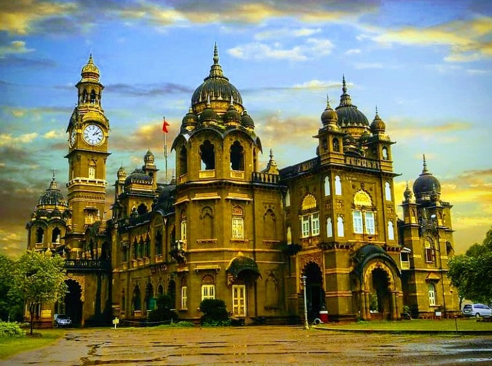

New Palace

Distance from hotel to mahalaximi temple 3km.
Mahalakshmi Temple (also known as Ambabai Mandir) is an important Hindu
temple dedicated to Goddess Lakshmi, who resides here as Supreme Mother Mahalakshmi and is worshipped by locals as Ambabai. Goddess Mahalakshmi is the consort of Lord Vishnu and it is customary among Hindus to visit Tirumala Venkateswara
Temple, Kolhapur Mahalakshmi Temple and Padmavathi Temple as a yatra (pilgrimage). It is believed that visiting these temples as a pilgrimage helps achieve moksha (salvation).
The temple of the goddess Mahalakshmi was built by Karnadeva in 634 CE Chalukya reign. Mounted on a stone platform, the murti of the crowned goddess is made of gemstone and weighs about 40 kilograms. The image of Mahalakshmi carved in black stone is 3 feet in height. The Shri Yantra is carved on one of the walls in the temple. A stone lion (the vahana of the goddess), stands behind the statue. The crown contains a five headed snake. Further, she holds a Matulinga fruit, mace, shield and a pānapātra (drinking bowl). In Lakshmi Sahasranama of Skanda Purana, Goddess Lakshmi is praised as "Om Karaveera Nivasiniye Namaha" means "Glory to the Goddess who lives in Karaveera" and as "Om Sesha Vasuki Samsevyaa Namaha" means "Glory to Goddess who is served by Adi Sesha and Vasuki". They are the 119th and 698th names of Lakshmi in Lakshmi Sahasranama. This is also the description mentioned in the Rahasya of Devi Mahatmya.[2] Professor Prabhakar Malshe says, "The name of Karaveera is still locally used to denote the city of Kolhapur".[3] Unlike most Hindu sacred images, which face north or east, the deity faces west (Pashchim). There is a small open window on the western wall, through which the light of the setting sun falls on the face of the image for three days around the 21st of each March and September.There are a number of other shrines in the courtyard to the Navagrahas, Surya, Mahishasuramardini, Vitthal-Rukmini, Shiva, Vishnu, Bhavani and others. Some of these images date back to the 11th century, while some are of recent origin. Also located in the
courtyard is the temple tank "Manikarnika Kund", on whose bank is another shrine to Visweshwar Mahadev.